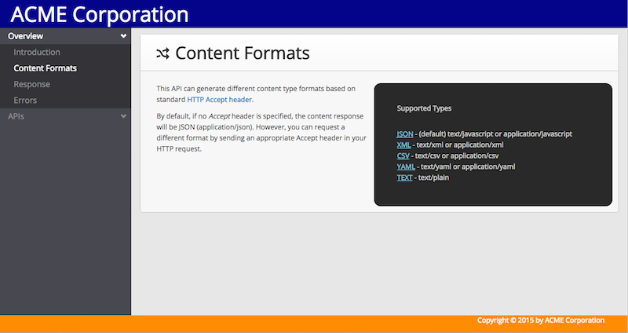
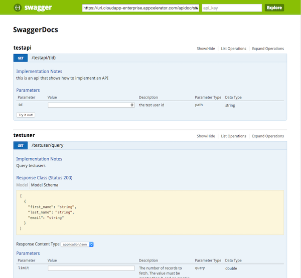

API Builder Docs
Introduction
API Builder includes two API doc interfaces–one public and one private. This topic discusses the public API interface. For the private API interface, see API Builder Console: API Docs.
The public API doc interface provides the essential information for external developers to use your RESTful APIs and provides request examples for different platforms. In contrast, the private one provides information about all APIs, Models, Connectors and Blocks as well as details about the authentication scheme, and allows you to test the APIs.
To access the API docs, append /apidoc to end of the published URL or browse to http://127.0.0.1:8080/apidoc if you are running the project locally. To change the path to the API docs, open the ./conf/default.js file and change the value of the apiDocPrefix key.
If you do not want to display public documentation about your APIs, in the ./conf/default.js file, set the admin.disableAPIDoc key to true.
module.exports = { admin: { // Default path to API docs apiDocPrefix: '/apidoc', // Enable public API docs disableAPIDoc: false }}Insert custom JavaScript and CSS
To brand the public APIs with your company's styling, API Builder can inject your own custom JavaScript and CSS into the API docs, as well as the Admin console, to modify the HTML and styling.
To inject your own JavaScript or CSS files into the Admin Console and API Doc interface:
-
Create the JavaScript and CSS files and place them in the project's ./web/public folder or you can reference the files from a remote server.
-
Open the ./conf/default.js file.
-
To inject CSS files, add the admin.css key and set it to an array of filenames either relative to the ./web/public folder or to an absolute URL.
-
To inject JavaScript files, add the admin.js key and set it to an array of filenames either relative to the ./web/public folder or to an absolute URL.
module.exports = { admin: { // Include ./web/public/app.css css: [ '/app.css' ], // Include ./web/public/app.js js: [ '/app.js' ] }}If you only want to modify either the Admin Console or API Doc interface, detect the apidoc class in the body element. Only the API Doc interface contains the apidoc class.
Example:
Let's add a header and footer to the API docs. Create a JavaScript file to insert div elements to the top and bottom of the body element, then create a CSS file to style the elements.
-
Create a file called app.js and place it in the ./web/public folder.
-
Copy and paste the following content into the app.js file:
./web/public/app.js(function () {// If we're not executing in an API Doc page, don't do anythingif(!$('body').hasClass('apidoc')) {return;}// Check if our header is here. If not, insert it.if($('#company-header').length ===0) {$('body').prepend('<div id="company-header">ACME Corporation</div>');}// Check if our footer is here. If not, insert it.if($('#company-footer').length ===0) {$('body').append('<div id="company-footer">Copyright © 2015 by ACME Corporation</div>');}})(); -
Create a file called app.css and place it in the ./web/public folder.
-
Copy and paste the following content into the app.css file:
./web/public/app.css// Adjust the margin of the nav bar and container to make room for the header and footerbody.apidoc #nav-secondary nav, body.apidoc #page-container {top: 50px;bottom: 25px;}body.apidoc #company-header {background-color: darkblue;color: white;font-size: 36px;height: 50px;padding-left: 20px;}body.apidoc #company-footer {background-color: darkorange;color: white;font-size: 12px;height: 30px;padding-right: 40px;text-align: right;position: fixed;bottom:0;z-index:1000;width:100%;} -
Open the ./conf/default.js file and add the following keys to include the files in the web page:
./conf/default.jsmodule.exports = {admin: {// Include ./web/public/app.csscss: ['/app.css'],// Include ./web/public/app.jsjs: ['/app.js']}}
Now run the project and navigate to the API docs page.

Swagger interface
Swagger is a popular framework to display RESTful APIs. API Builder creates an API endpoint to generate data that can be consumed by Swagger. You can easily add a Swagger interface to your application by copying the Swagger UI and making a few modifications to point Swagger to the API Builder API endpoint.
To display a Swagger interface of the API docs:
-
Copy the contents of the https://github.com/swagger-api/swagger-ui/blob/5fa84ff5705de2b00e00528efe74a48fd9a49ab1/dist/ folder to the API Builder project's ./web/public/ folder.
## Note thatthiswill overwrite the index.html and content in the css, font and images folderscd <APIBuilderProject>/web/publicgit clone https://github.com/swagger-api/swagger-ui.gitcp -r swagger-ui/dist/* .rm -rf swagger-ui -
Open ./web/public/index.html file and make the following modifications:
-
At line 38, modify the url variable in the else condition to point to the application's API endpoint:
// Find:url ="http://petstore.swagger.io/v2/swagger.json";// To test locally, change to:url ="http://127.0.0.1:8080/apidoc/swagger.json";// For production, first publish the application to get the URL, replace the URL, then do a force republishurl ="https://<APP_GUID>.cloudapp-enterprise.appcelerator.com/apidoc/swagger.json"; -
At line 80, modify the SwaggerClient.ApiKeyAuthorization() method to add the API key for authorization. (Will not work for Internet Explorer 9 and earlier.):
// Find:var apiKeyAuth =newSwaggerClient.ApiKeyAuthorization("api_key", key,"query");// Change to:var apiKeyAuth =newSwaggerClient.ApiKeyAuthorization("Authorization",'Basic '+ btoa(key),"header"); -
Optional. At lines 89 and 92, uncomment the apiKey variable and specify your API key to hard code the value.
-
-
Run or publish the application, then in a browser, navigate to the API Builder application's base URL (http://127.0.0.1:8080/ or https://<APP_GUID>.cloudapp-enterprise.appcelerator.com/) to display the Swagger interface.
